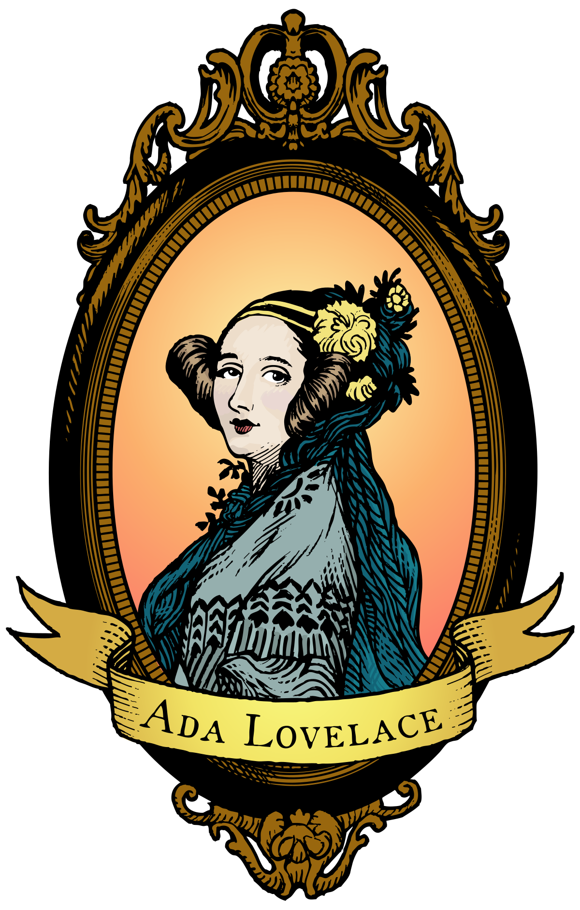

Augusta Ada Byron - Ada Lovelace
(1815/12/10 - 1852/11/27)
Escritora y matemática británica
Seré, a su debido tiempo, poeta-
- Una de las pioneras de la computación.
- Obras: Ada, the Enchantress of Numbers:A Selection from the Letters of Lord Byron's...
- Área: Matemáticas e informática
- Padres: George Gordon Byron y Anne Isabella Milbanke
- Cónyuges: William King-Noel
- Hijos: Byron, Anne Isabella, Ralph Gordon
- Título: Condesa de Lovelace
"Nuestra familia es una estratificación alternativa de poesía y matemáticas"
-Ada Lovalace
Ada Lovalace nació el 10 de diciembre de 1815 en Londres, Reino Unido.
Padres
Hija del famoso poeta romántico Lord Bryony de la matemática Anne Isabella Milbanke.
Sus padres se separaron cuando ella tenia un año.
Estudios
Desde muy pequeña tuvo excelentes profesores de matemáticas, astronomía, literatura y música.